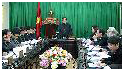

Ngày 9-2-2012, UBND tỉnh tổ chức hội nghị đánh giá tình hình thực hiện nhiệm vụ kinh tế - xã hội tháng 1, triển khai nhiệm vụ trọng tâm tháng 2-2012. Đồng chí Nguyễn Văn Tuấn, Phó Bí thư Tỉnh uỷ, Chủ tịch UBND tỉnh chủ trì hội nghị.